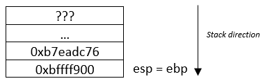

How does the stack work ?
1/ Memory Layout
The memory can be represented by several layers. It is composed by the text segment, the initialized data segment (data), the uninitialized data segment (bss), the heap and the stack.

- Text Segment : The text segment contains the machine code or the program instruction. It is located at the bottom of the memory layout to avoid overwriting the instructions in case of stack or heap overflows.
- Initialized Data Segment: The segment is also called data, it contains global variable and static variable that are initialized in the program.
- Uninitialized Data Segment: Also called BSS, it contains the global and static variable that are not initialized in the program.
- The heap: The heap is the layer of the memory layout where dynamic memory allocation takes place and stores dynamic variable.
- The stack: It contains local variables of a function.
2/ Understanding the stack
The assembly code below will be served as an example.
 For this example, we will monitor 3 registers (eip, esp, ebp).
For this example, we will monitor 3 registers (eip, esp, ebp).
- eip: It stands for Extended Instruction Pointer, and it is used to tell the computer what is the next intruction in the program.
- esp: Stack pointer
- ebp: Base pointer
Before reaching the instruction, all registers are pointing to an address. Those registers take the following addresses:
eip = 0xb7eadc70
ebp = 0xbffff900
esp = 0xbffff7e4
In our example, at the beginning, the stack looks like this:
Registers information:
eip = 0xb7eadc73
ebp = 0xbffff900
esp = 0xbffff7e4
Calling a function will also push the address of the next instruction to the stack. The value of the address of the top of the stack is 0xb7eadc76. The register esp is the stack pointer, so it always points to the top of the stack, esp = 0xbffff7dc and then we jump to the address of the function (0x80483f4).
Registers information:
eip = 0x080483f4
ebp = 0xbffff900
esp = 0xbffff7dc
Why esp = 0xbffff7dc ? Remember the memory layout presented on the top of the page, the stack goes from high address to low address. Each memory address is a single byte and since the program is storing the address of the next instruction at the top of the stack, esp will have a lower address.
esp - 8 = 0xbffff7e4 - 8 = 0xbffff7dc

Registers information:
eip = 0x080483f5
ebp = 0xbffff900
esp = 0xbffff7d8
ebp = esp
Registers information:
eip = 0x080483f7
ebp = 0xbffff7d8
esp = 0xbffff7d8

Difference between Bitwise AND and logical operator AND: Logical return 1 (true) or 0 (false) whereas Bitwise is doing a bit by bit checking (1011 & 0101 = 0001).
esp & 0xfffffff0 = 0xbffff7d8 & 0xfffffff0 = 0xbffff7d0
To manually calculate bitwise, convert the hexadecimal number into binary, then proceed to the bitwise AND calculation.
10111111111111111111011111011000
11111111111111111111111111110000
--------------------------------
10111111111111111111011111010000 = BFFFF7D0
To manually calculate bitwise, convert the hexadecimal number into binary, then proceed to the bitwise AND calculation.
10111111111111111111011111011000
11111111111111111111111111110000
--------------------------------
10111111111111111111011111010000 = BFFFF7D0
Register information:
eip = 0x080483f7
ebp = 0xbffff7d8
esp = 0xbffff7d0
esp = esp – 0x60
This correspond to the size of the stack, after subtracting esp, it has created a new stack frame, the base pointer (ebp) will be pointing to the beginning of the stack whereas the stack pointer (esp) is pointing to the address at the top of the stack. The computer is allocating memory space for the function and every local variable will be store in that memory space called stack frame. Registers information:
eip = 0x080483fd
ebp = 0xbffff7d8
esp = 0xbffff770
Registers information:
eip = 0x080483fd
ebp = 0xbffff7d8
esp = 0xbffff770
Registers information:
eip = 0x080483fd
ebp = 0xbffff7d8
esp = 0xbffff7d8
The second part takes off the top of the stack and put the content in ebp. The instruction is pop ebp. If you remember the value of ebp at the beginning, it has the same value, therefore we come back to the previous stack frame, the register ebp is pointing back to the beginning of the old base pointer.
Registers information:
eip = 0x080483fd
ebp = 0xbffff900
esp = 0xbffff7d8
Registers information:
eip = 0xb7eadc76
ebp = 0xbffff900
esp = 0xbffff7e4
Same as the first instruction, but this time by deleting a memory address from the stack, it add 8 bits to the register esp address.
esp + 8 = 0xbffff7d8 + 8 = 0xbffff7e4
After that, the program run the instruction store in the register eip: 0xb7eadc76 <__libc_start_main+230>: mov DWORD PTR [esp], eax.